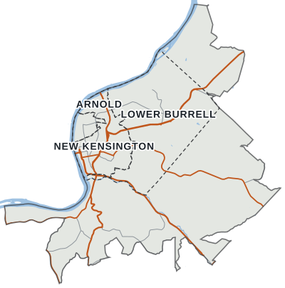
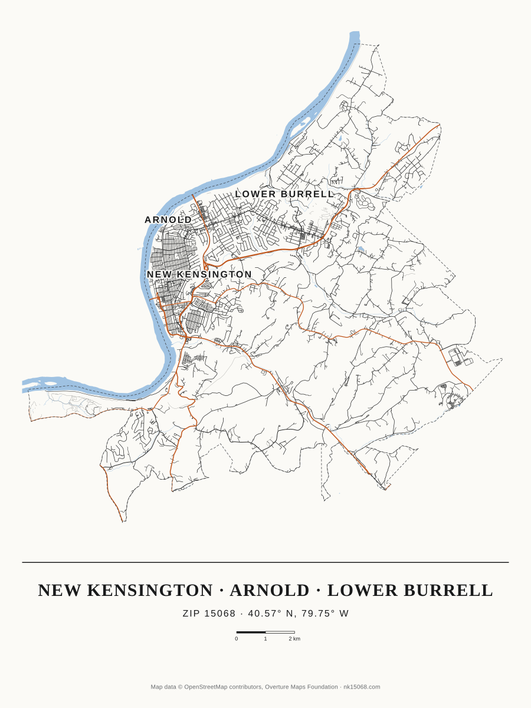

Map of ZIP 15068
LLost pet
FFound pet
SSpotted
Violent
Property
Police and other
Police involved
Street only (approximate)
News-reported, placed at a block, intersection, place or streetFatal crash
Serious-injury crash
Map data © OpenStreetMap contributors · Overture Maps · US Census · AWS Terrain Tiles
